class: center, middle # The ASR4Memory Project ## Oral History Archives & Automatic Speech Recognition 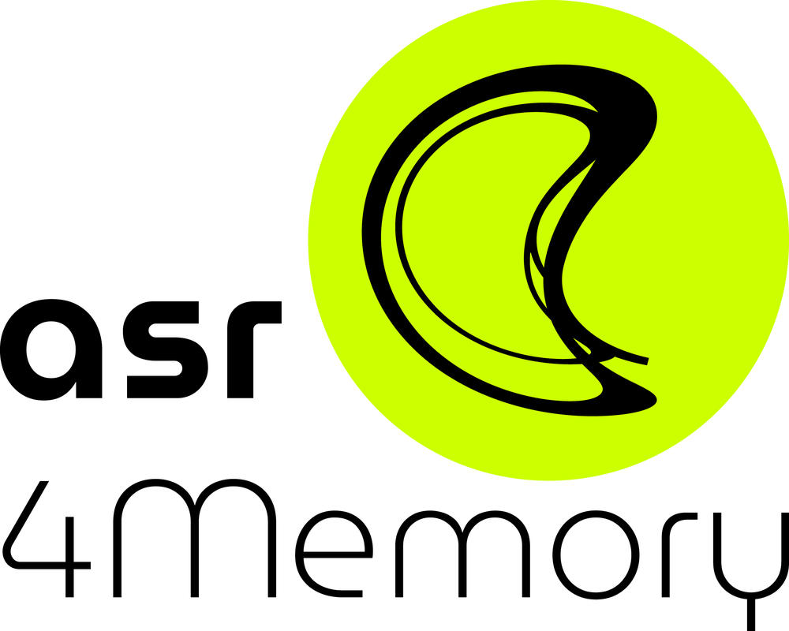 --- # Workshop Content 1. ASR4Memory project overview, results and next steps _(Marc)_ 2. Fine-tuning _(Peter)_ 1. Dataset preparation and anonymization with LLMs 2. Training via hyperparamter optimization 3. Evaluation with LLMs --- class: center, middle # Project Overview --- # Project Overview ASR4Memory ## Overview - Project Duration: January to December 2024 - Funding: - NFDI (Nationale Forschungsdateninfrastruktur) - NFDI4Memory - Team Members: - [Peter Kompiel][1] - [Marc Altmann][2] - [Tobias Kilgus][3] (FU Berlin) - Christian Horvat (Department of Mathematics, FHNW) - Implementation: University Library of FU - Department: Research and Publication Services - Team: Digital Interview Collections Website: <https://www.fu-berlin.de/asr4memory> --- # Initial Situation - Oral History.Digital – platform for oral history interviews - Over 40 archives with 4,000 interviews (video/audio) - Most of the archives from other institutions - Many interviews around 4h length - <https://portal.oral-history.digital/de> --- 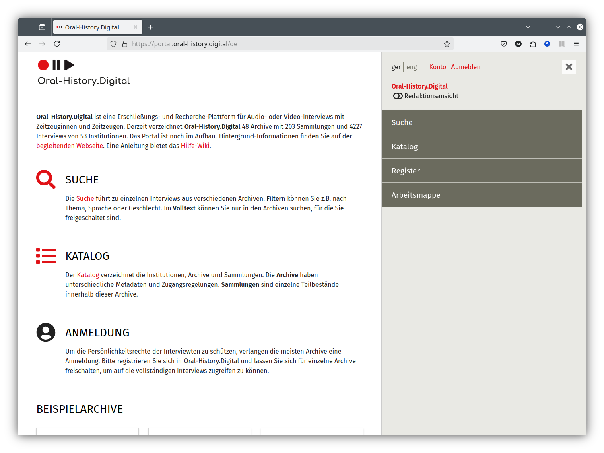 --- 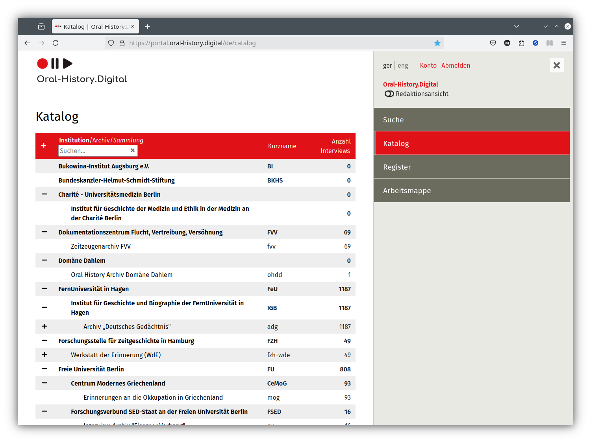 --- <img src="ohd_search.png" width="100%" alt="oh.d search page"> --- 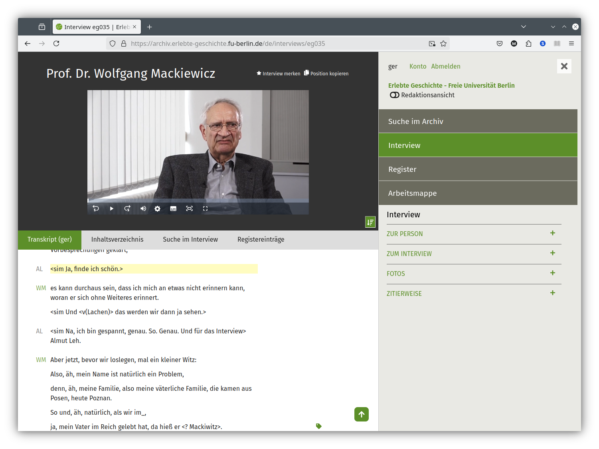 --- # Initial Situation - Large collections of historical audiovisual resources need to be made accessible and searchable: - Transcription is key! --- 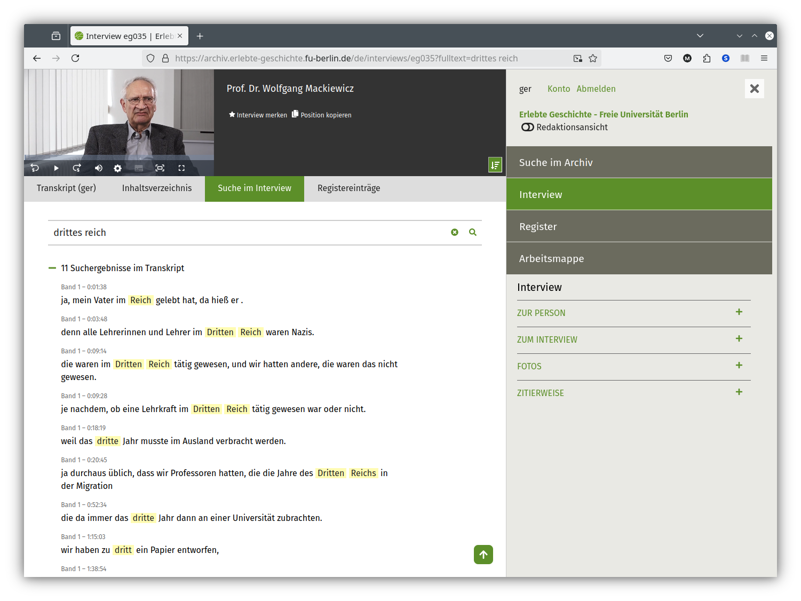 --- 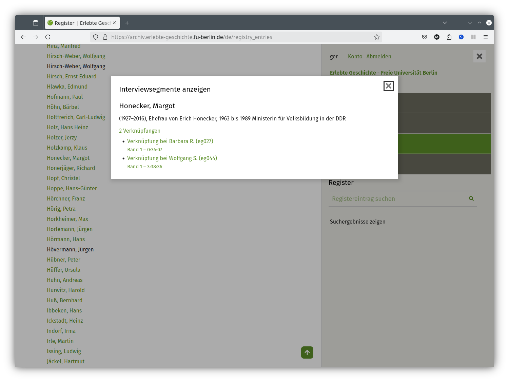 --- # Initial Situation - Large collections of historical audiovisual resources need to be made accessible and searchable: - Transcription is key! So far, transcription of AV resources has been done via: 1. Manual transcription → very time-consuming and costly 2. Commercial transcription services - Poor data protection (cloud services) and high costs - Mediocre transcription quality, few export formats --- # OpenAI Whisper .right[] - Automatic speech recognition with high accuracy - Multilingual - Robust (accents, background noise, speech patterns...) - Open-source model - Using Whisper for our own transcriptions since ~2 years --- # Project goals of ASR4Memory - Evaluate Whisper and compare Whisper variants - Especially WhisperX - Build a transcription pipeline for our own use cases and with special post-processing - Start work on a web transcription service, including an online transcript editor - Try to fine-tune the Whisper model with data from our oral history interviews - Open-source all the code: <https://github.com/asr4memory> --- 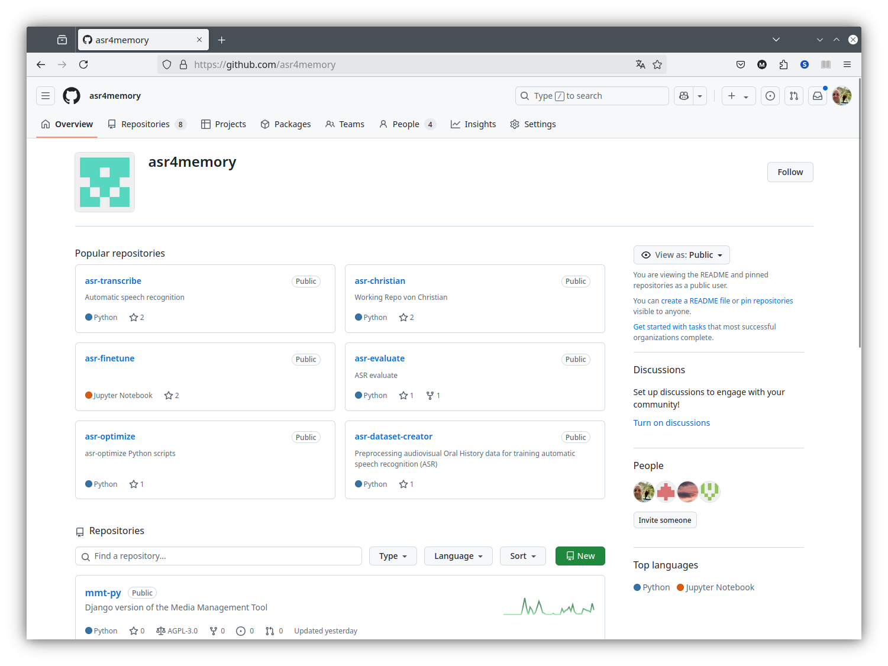 --- # Results - Semi-automatic transcription service with WhisperX on our university servers - Gained knowledge on pre-processing and configuration - Started development of a web service - Started fine-tuning of the Whisper model - Identified further applications and challenges, e.g. named entity recognition, anonymization --- class: center, middle # Software ## asr-transcribe --- <img src="transcribe_config.png" width="100%" alt="asr-transcribe configuration"> --- 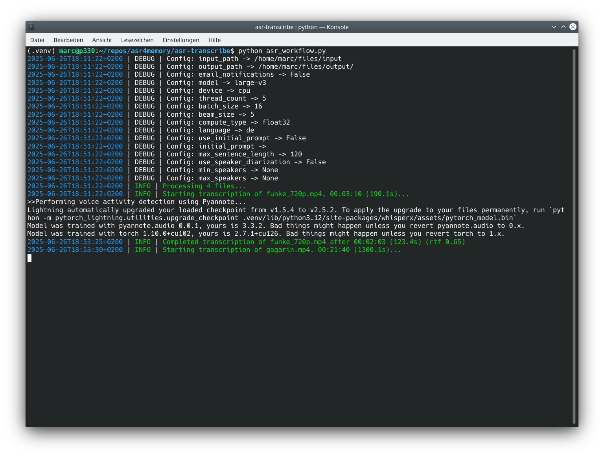 --- 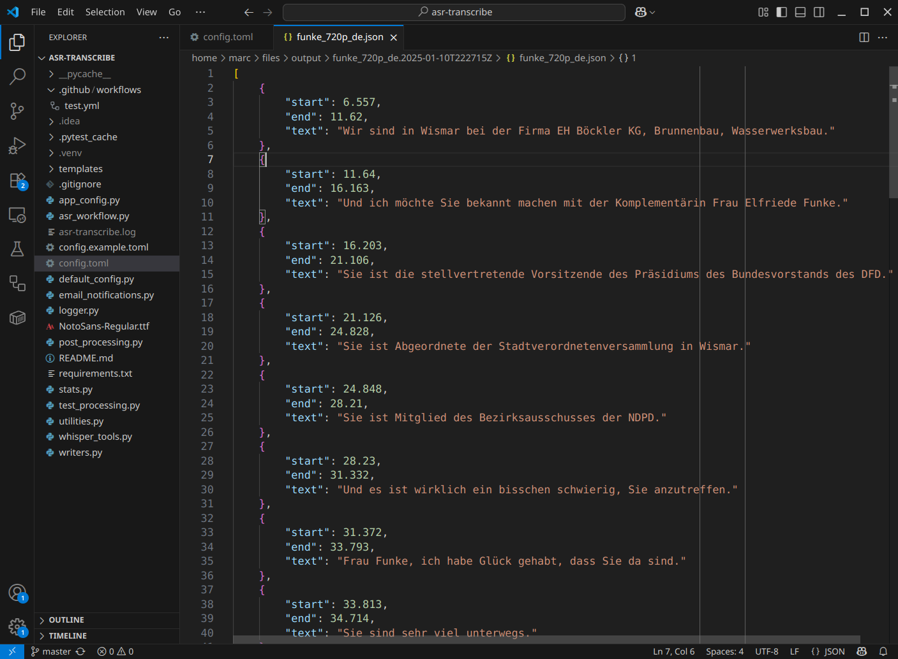 --- <img src="transcribe_pdf.png" width="100%" alt="asr-transcribe pdf result"> --- class: center, middle # Software ## Webservice --- 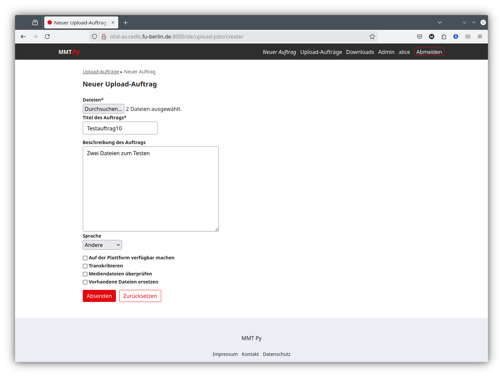 --- 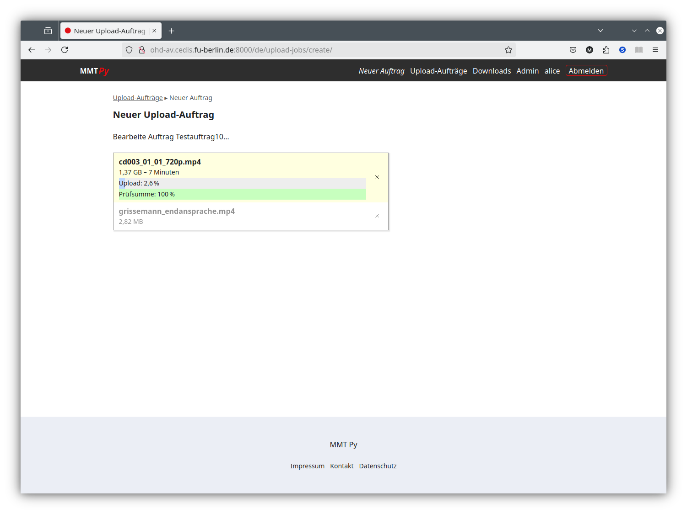 --- 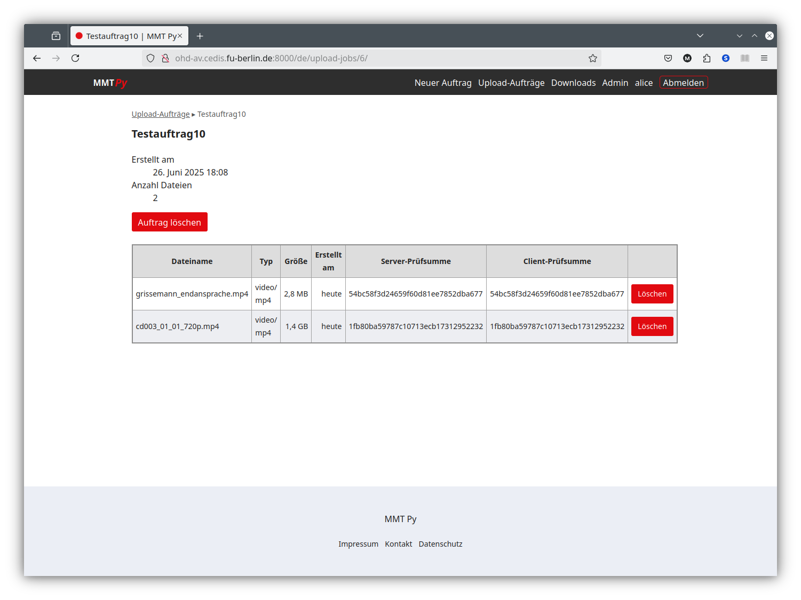 --- class: center, middle # Software ## NER tool prototype --- 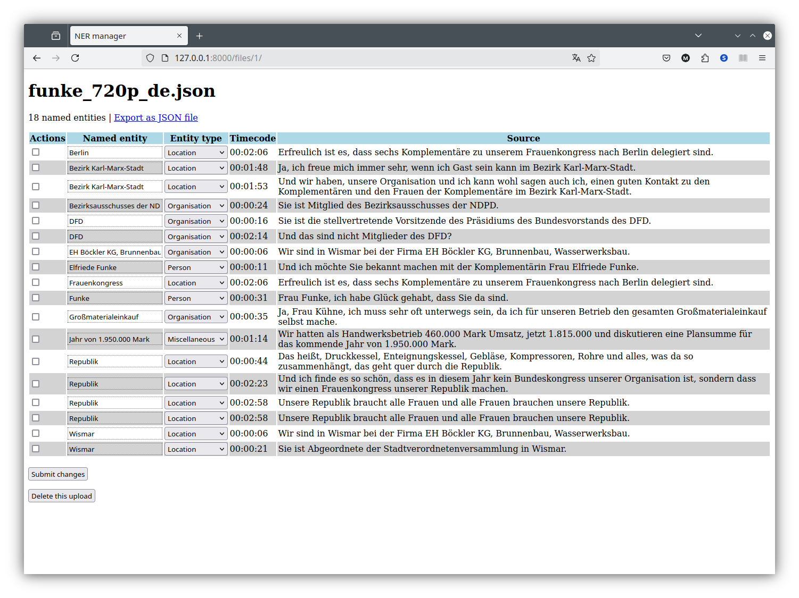 --- # Next Steps - Make it easier for our partners to… - transcribe interviews - edit transcripts - upload transcripts to the OH.D platform - find named entities - anonymize parts an interview ([Open.Oral History][4] project) - additional export formats, e.g. TEI - Improve weaknesses of Whisper, e.g. - reduce smoothing of transcripts - improve recognition of non-English proper names - improve transcription of local dialects - improve recognition of multiple speakers - reduce hallucinations Important next step: fine-tuning of the ASR models (Peter) --- class: center, middle # Fine-tuning [1]: https://www.cedis.fu-berlin.de/cedis/mitarbeiter/beschaeftigte/pkompiel.html [2]: https://www.fu-berlin.de/sites/ub/ueber-uns/team/altmann/index.html [3]: https://www.fu-berlin.de/sites/ub/ueber-uns/team/kilgus/index.html [4]: https://www.fu-berlin.de/sites/interviewsammlungen/forschung/ooh/index.html